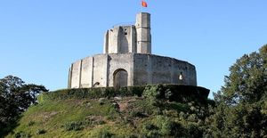
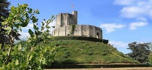
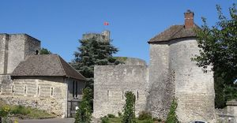
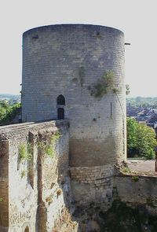
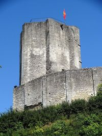
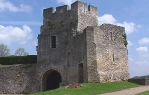
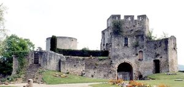
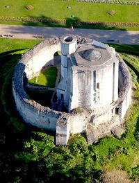

Recensement Jean-Claude Truffet
| Département | 27 — Eure |
| Canton | Gisors |
| Commune | Gisors |
| Type d'édifice | Forteresse |
| Période d'origine | X-XI-XII |
| Coordonnées GPS | 49° 16' 51" Nord, 1° 46' 28" Est |








GISORS, le site est fortifié au XIe siècle pour protéger les possessions normandes du roi dAngleterre face aux velléités du Roi de France. La forteresse sinscrit dans une campagne de fortifications de la vallée de lEpte, limite naturelle entre les deux royaumes. Dès 1097, sous le règne du deuxième fils de Guillaume le Conquérant, débute la construction dune importante motte de terre ceinte de fossés, sur laquelle reposait probablement une tour de bois entourée dune palissade. Au cours de la première moitié du XIIe siècle, les principaux éléments de fortifications en pierre remplacent ceux en bois, la tour de guet devient un donjon octogonal massif, la palissade, une enceinte en pierre nommée chemise qui contient chapelle et cuisine. Le roi dAngleterre, Henri Ier Beauclerc disparaît sans héritier mâle. Sa fille Mathilde écartée du trône, épouse le comte Geoffroy Plantagenêt, qui se retrouve ainsi Duc de Normandie. Ce dernier cède Gisors au Roi de France, Louis VII, en échange de son aide contre Etienne de Blois, Roi dAngleterre et oncle de Mathilde. Suite à la mort dEtienne de Blois en 1154, Henri II Plantagenêt, fils de Geoffroy, est propulsé à la tête du royaume dAngleterre, et Henri décide de reprendre Gisors, davantage par la ruse que par la force. En 1158, une entrevue a lieu à Gisors entre les deux souverains : en gage de réconciliation, le Roi de France donne en mariage au fils dHenri II, sa fille Marguerite (âgée de six mois), et lui cède en dot Gisors. En attendant le mariage, la garde du château est confiée à trois templiers: Robert de Piron, Tostes de Saint Omer et Richard de Hastings. Mais Henri II fait célébrer le mariage plus tôt quil été convenu, (les époux ayant neuf ans à eux deux, et se fait remettre le château de Gisors en 1161.
GISORS Sous Henri II Plantagenêt, une deuxième campagne de travaux est entamée. Une grande enceinte, longue de plus de 800 mètres et protégée par huit tours, enveloppe le donjon central. Ces dernières présentent une grande diversité et des innovations architecturales majeures : tour quadrangulaire à bec, tour en U, tour circulaire à plusieurs niveaux darchères. Conquise par Philippe Auguste en 1193, la forteresse redevient française. Au début du XIIIe siècle, le roi de France y fait de nombreuses et profondes transformations. Le château de Gisors devient à partir de cette date une importante résidence royale avec un grand nombre de communs et un logis dont il subsiste encore les caves. Lors de la guerre de Cent Ans, après un siège de trois semaines, le château et la ville sont pris par les Anglais, tout comme lensemble de la Normandie de 1419 à 1449. Repris par le Roi de France, le château fait lobjet de nombreux remaniements, les bâtiments royaux et les communs sont restaurés. Les travaux les plus importants concernent l'adaptation de la forteresse, face aux progrès de l'artillerie, avec la construction dune fausse braie : construction de remparts de terre, intégration d'un bastion en forme d'as de pique avec casemates et souterrain qui le relient aux restes des fortifications, arasement des anciens remparts et aménagement d'une galerie couverte aux pieds des remparts du XIIe, qui seconde les remparts de terre. Avec la fin des guerres de religion, en 1599, le château est déclassé des sites militaires français : il n'a plus alors d'intérêt stratégique. La majorité des communs est détruite. Au début du XIXe siècle, le château de Gisors devient un lieu de visites des premiers touristes et en 1862 il est classé M.H..
.
Famille d'Henri Ier Beauclerc
"
Gisors GPS : 49° 16' 51" Nord, 1° 46' 28" Est